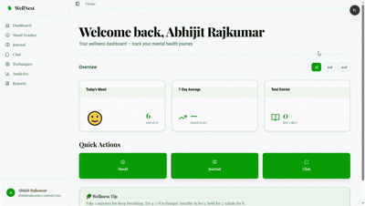
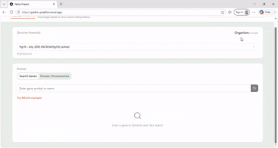
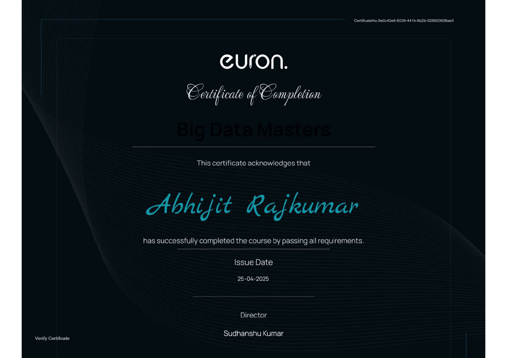
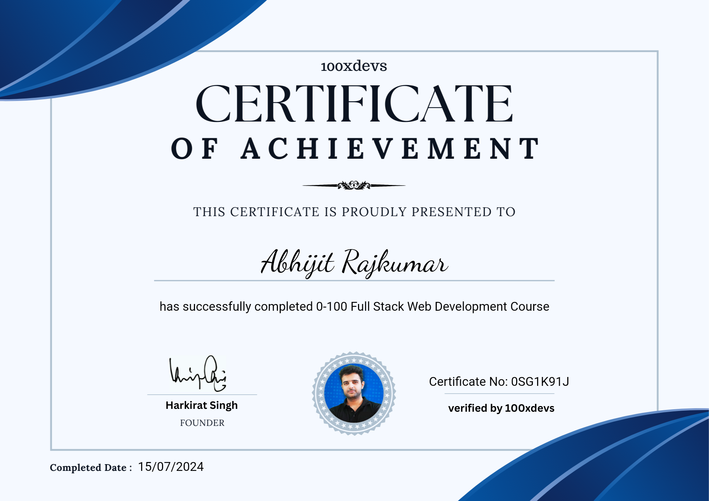
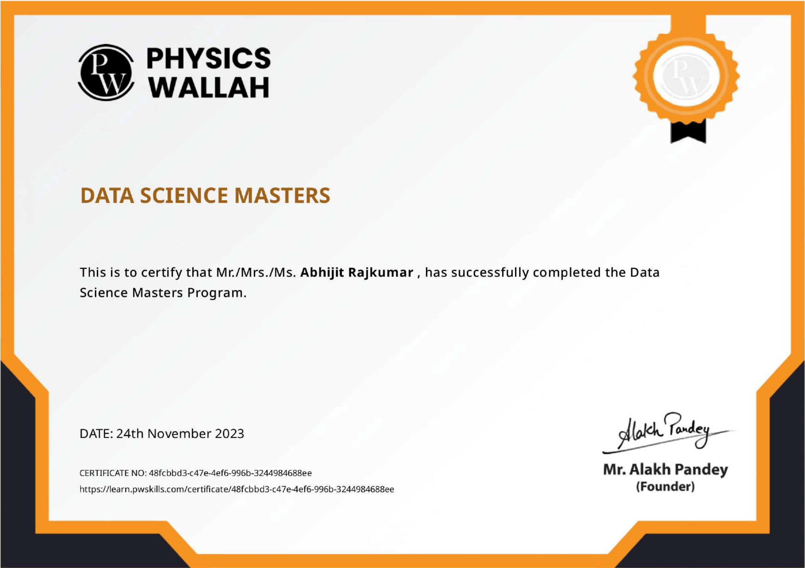

Hey, I'm Abhijit Rajkumar — I build AI systems that actually ship.
<RAG • LLM Agents • Full-Stack />I design and ship retrieval-augmented systems, autonomous coding agents and full-stack products end to end — from vector pipelines and FastAPI backends to polished Next.js frontends.
 live intro reel
live intro reel
From Linear Algebra to LLM Pipelines
A mathematician-turned-engineer who now spends most days wiring up embeddings, agents, and cloud-native backends.
I'm an AI/ML engineer and full-stack developer based in Assam, India, with a Bachelor's in Mathematics and a habit of turning research-shaped problems into working software. My recent work centers on Retrieval-Augmented Generation, autonomous coding agents, and genomics-adjacent ML — shipped as complete products, not notebooks.
At Euron I built MediRAG, a medical document analysis system spanning ingestion, embeddings, vector search and grounded LLM responses. Alongside that I've built an AI PR-reviewer (GitHawk), a v0-style UI generation platform running on cloud sandboxes, and a genomic variant pathogenicity predictor — each one a full pipeline from data to UI.
RAG & LLM Systems
Pinecone, FAISS, LangChain, Gemini, GPT
Full-Stack
Next.js, FastAPI, PostgreSQL, Docker
Big Data
Hadoop, Spark, Kafka, Airflow
Math Foundation
B.Sc Mathematics, statistical modeling
My Toolbox
The languages, frameworks and platforms I reach for most.
Languages
AI & LLMs
Databases
Cloud & DevOps
Full-Stack
Machine Learning
Big Data
Tools
Projects I've Shipped
Full pipelines — from data ingestion to a live UI — not just notebooks.

MediRAG (RAGnosis)
- Full-stack AI-powered medical document analysis system using Retrieval-Augmented Generation.
- End-to-end pipeline: ingestion → embeddings (LlamaIndex, HuggingFace) → vector search (Pinecone/FAISS) → LLM generation.
- FastAPI backend, Next.js frontend, Docker Compose deployment.
- Semantic search with source-grounded responses for accurate medical Q&A.

Add a WellNest screenshot/gif to /assets/images'}))">WellNest
- Privacy-first AI mental health companion with personalized conversations, mood tracking, journaling, and wellness analytics.
- FastAPI backend with LangGraph-powered workflows orchestrates context retrieval, mood analysis, personalized responses, journaling prompts, and coping strategies.
- Next.js dashboard visualizes mood trends and wellness insights, with exportable PDF/CSV reports for longitudinal tracking.
- Modular service-oriented architecture with JWT authentication, MongoDB persistence, Redis caching, Docker Compose, and API-layer validation.

CLI Agents
- Interactive Python CLI agent powered by OpenAI-compatible models for exploring, understanding, and modifying real-world software projects directly from the terminal.
- Project-aware AI assistant with local filesystem, shell execution, code search, image analysis, Git diff, and file read/write tools for autonomous development workflows.
- Short-term conversational memory combined with project context, filtered file trees, and project-specific instructions for more accurate multi-turn coding assistance.
- Extensible MCP integration supporting stdio, SSE, and Streamable HTTP servers, allowing external tools to be dynamically connected to the agent.

Add a Patho-Predict screenshot/gif to /assets/images'}))">Patho-Predict
- Genomic variant pathogenicity prediction platform — input a chromosomal position + alt nucleotide, get an AI-powered clinical classification with evidence.
- Modal serverless FastAPI endpoint fetches the reference base from UCSC, translates codon changes with Biopython, and scores across CADD-like, biochemical-severity and GC-conservation signals.
- Weighted model (0.45 × CADD + 0.35 × ESM-proxy + 0.20 × Conservation) outputs Likely Pathogenic / Uncertain / Likely Benign.
- ClinVar overlays, gene visualization and 7 Next.js API routes across UCSC/NCBI, supporting hg38, hg19, mm39 and more.
Work Experience
From breast-cancer classifiers to production RAG systems.
AI/ML Intern
09/2025 – 04/2026- Built MediRAG (RAGnosis), a full-stack AI-powered medical document analysis system using RAG.
- Designed end-to-end pipeline: ingestion → embeddings (LlamaIndex, HuggingFace) → vector search (Pinecone/FAISS) → LLM response generation.
- Developed a scalable architecture using FastAPI, Next.js and Docker Compose.
- Implemented semantic search and source-grounded responses for accurate medical Q&A.
Big Data Engineering Intern
09/2025 – 04/2026- Worked across Hadoop, Spark (RDDs, DataFrames, Catalyst), Kafka and Spark Streaming.
- Orchestrated pipelines with Airflow and Azure Data Factory across Azure & AWS (S3, EMR, Glue, Athena).
- Shipped fraud-detection and sentiment-analysis pipeline projects.
Apprentice
01/2022 – 11/2023- Led development of ML solutions for Exploratory Data Analysis (EDA) products.
- Collaborated with data scientists and software developers to integrate ML capabilities into EDA tools.
- Actively troubleshot and resolved complex engineering challenges.
AI/ML Intern
06/2021 – 08/2021- Developed a Breast Cancer Prediction model achieving 99.45% classification accuracy.
- Engineered a modular ML pipeline: data ingestion, transformation, training and prediction.
- Gained hands-on experience across the end-to-end ML workflow.
Education
Where the math foundation for all of this came from.
Bachelor of Science in Mathematics
- Core subjects: Linear Algebra, Real Analysis, Number Theory, Complex Analysis, Mathematical Modeling.
- Applied mathematical concepts to real-world problems in traffic control and rainfall prediction.
Scholastic Achievements
- Completed an MSc project on "Traffic Control Optimization using Linear Algebra," demonstrating expertise in mathematical modeling — actively working towards publication.
- Completed an MSc project on rainfall prediction using Time Series analysis, applying advanced statistical techniques to real-world challenges — pursuing academic publication of findings.
Courses & Certificates
Click any card to view the certificate full-size.

Add big-data-engineering.png to /assets/images/certificates'}))">Big Data Engineering Intern
Euron · Sep 2025 – Apr 2026

Add fullstack-cohort.png to /assets/images/certificates'}))">Full Stack Developer Cohort (0 to 100)
Instructor: Harkirat Singh · Jul 2024

Add data-science-masters.png to /assets/images/certificates'}))">Data Science Masters Certification
PW Skills · Nov 2023
Let's Build Something Together
Have a project in mind, or just want to talk RAG pipelines? My inbox is open.
Contact Info
Based in Assam, India — open to remote AI/ML and full-stack roles.